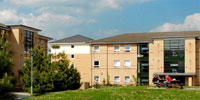
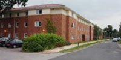
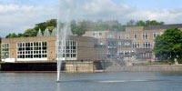

JCRC Elections 2011
Alcuin

Alcuin Timetable
Alcuin hustings
Alcuin JCRC election results
Derwent
Derwent timetable
Derwent Hustings
Derwent JCRC elections results
Goodricke
Goodricke timetable
Goodricke JCRC Hustings
Goodricke JCRC election results
Halifax

Halifax timetable
Halifax JCRC Hustings
Halifax JCRC election results
James
James timetable
James Hustings
James JCRC election results
Langwith
Langwith timetable
Langwith Hustings
Langwith JCRC election results
Vanbrugh

Vanbrugh timetable
Vanbrugh Hustings
Vanbrugh Chair debate
Vanbrugh JCRC election results